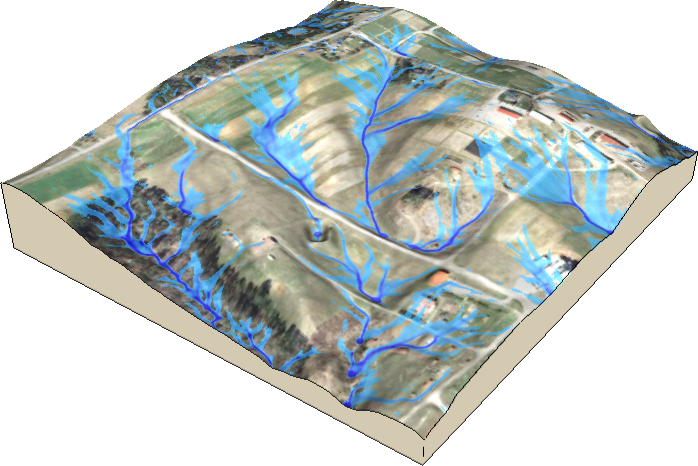

Topics
- 1. Geospatial Data Introduction
- 2. Geospatial Data Models and Visualization
- 2. Geospatial data models
- 2.B Data display and visualization
- 3. Geospatial Analysis
- 3.A Global, zonal and neighborhood operations, map algebra
- 3.B Buffers, cost surfaces, least cost path
- 4. Spatial Interpolation
- 4.A Spatial interpolation: methods
- 4.B Spatial interpolation: splines
- 5. Geomorphometry
- 5.A Terrain modeling
- 5.B Spatial and temporal terrain analysis
- 6. Viewshed, solar energy potential analysis
- 7. Flow modeling
- 7.A Flow routing, watershed analysis
- 7.B Hydrologic and Erosion modeling
Related courses
To learn more about these topics, here are some related courses which may be useful for you.